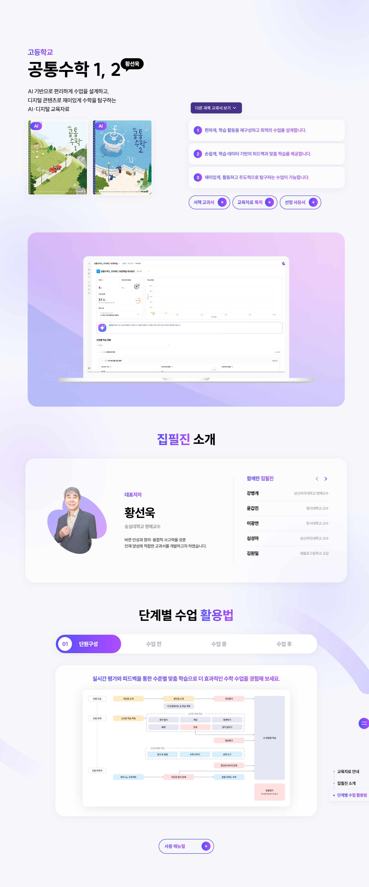
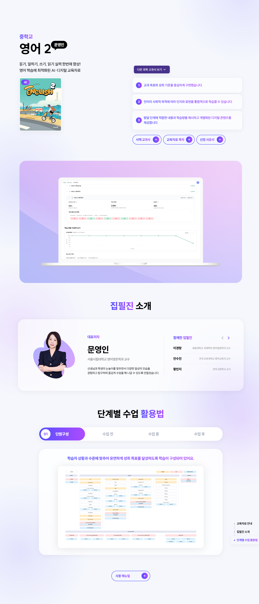
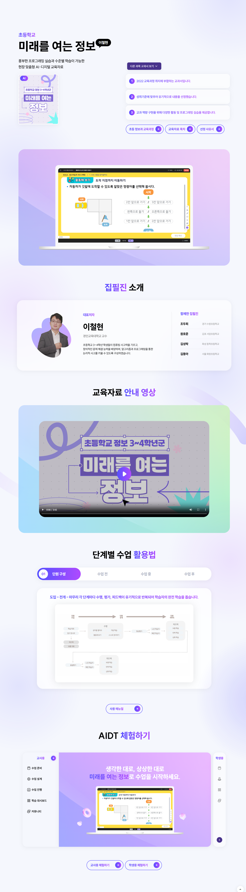
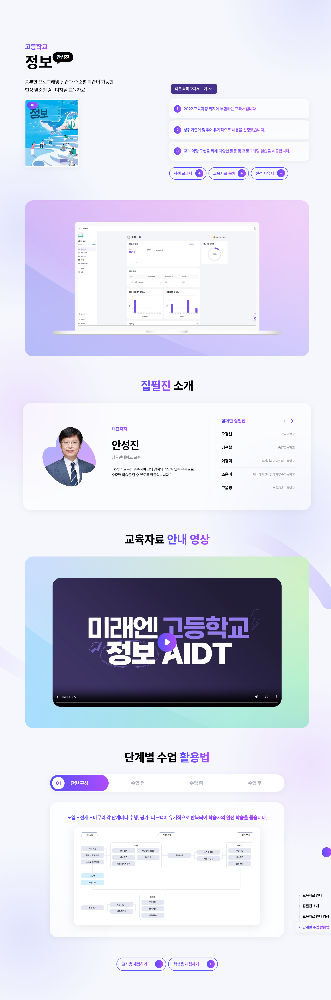

MireaN AIDT
- YEAR
- 11 2024
- DURATION
-
- 2 weeks of production
- 2 days of maintenance
- FIELDS
-
- TEAM PROJECT
- PUBLISHING
- MARKUP
- CMS
- VS
- SCSS
- HOW I WORKED ON IT
-
미래엔은 1948년에 설립된 대한민국 최초의 교과서 발행사로, 출판과 콘텐츠 개발을 선도하는 기업입니다.
복잡하고 어려운 기능이 아닌, 누구나 쉽고 간편하게 사용할 수 있는 미래엔 AI 교과서.
미래엔 AI 디지털 교과서의 장점은 그대로 살리되 단점이 되는 키워드는 장점으로 승화시킬 수 있도록 구현했습니다.
#OVERVIEW
미래엔에서는 AI 디지털 교과서의 장점은 살리되,
교사가 쉽고 간편하게 이해할 수 있도록 직관적인 설명을 하는 사이트를 원했습니다.
정보의 구조와 인터랙션을 단순화하여 교사와 학생 모두가 직관적으로 접근할 수 있도록 구현했습니다.
가르침은 더 깊어지고
배움은 더 넓어지는
#PROJECT_STRATEGY
신비롭고 몽환적인 느낌의 톤앤매너로 AI가 가진 초현실적인 느낌을 전달하고,
명확하고 직관적인 레이아웃과 밝은 분위기로 AI 디지털교과서가 만들어내는 가능성과 신뢰감을 구현했습니다.
#KEY_CHALLENGE
실제 교사용 학습 관리 시스템(LMS) 내부의 인터랙션 구조를 홍보 페이지 내에 그대로 체험할 수 있도록 구현하고 교과서의 팁과 예시 자료를 영상으로 구현해 더욱 쉬운 이해를 돕도록 했습니다.
로그인이 필요한 실제 서비스 환경과 유사한 UI를 재현해 사용자가 직접 클릭과 전환을 통해 기능의 흐름을 경험할 수 있게 만든 부분입니다.
복잡한 스크립트 대신 최소한의 마크업 구조와 트랜지션만으로 자연스러운 동작감을 구현하여 실서비스와 동일한 인터페이스 로직을 반영하여 체험성과 신뢰도를 동시에 확보했습니다.
#DESIGN_SYSTEM
브랜드의 교육적 이미지에 맞춰 보라 계열의 부드럽고 친근한 톤앤매너를 적용했습니다.
COLOR
FONT
가르침은 깊어지고, 배움은 더 넓어집니다.
가르침은 깊어지고, 배움은 더 넓어집니다.
#SITE_PREVIEW
-

-

-

-

-
